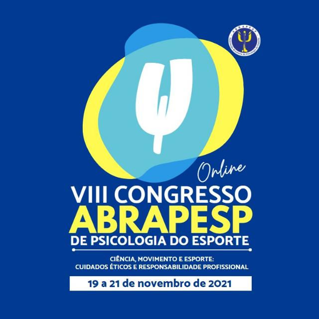

De 19 a 21 de novembro a ABRAPESP reúne associados e interessados em Psicologia do Esporte no VIII Congresso da entidade, desta vez online, em função na pandemia.

A programação já está sendo organizada, assim como as inscrições de trabalhos. o tema é Ciência, movimento e esporte: cuidados éticos e responsabilidade profissional.
Até novembro, estão programados dois pré-eventos: em julho o pré-evento acontece junto com o I Encontro Cearense de Psicologia do Esporte e em junho ou agosto o segundo evento (sendo organizado).
Erika Epiphanio, vive presidente da ABRAPESP avisa:
Vamos ter na programação vários momentos de atividades de movimento, oficinas e praticas rápidas de movimento, na linha da campanha da ABRAPESP.
E ai, já está pronto. Aproveita agora para comentar o que você espera.